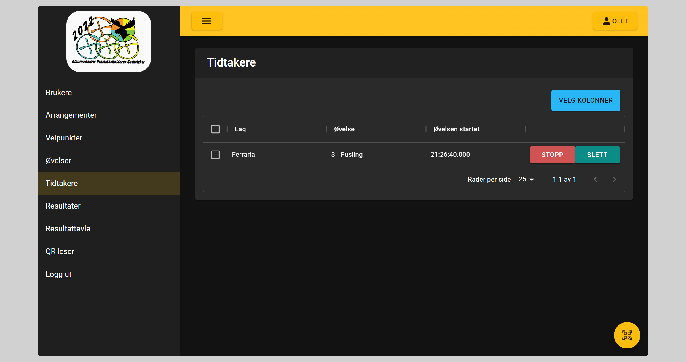

Tidtakere

Her vil de som har Rediger resultat rolle kunne se en oversikt over alle aktive tidtakere. Vi kan også stoppe eller slette tidtakeren
Stoppe tidtaker
Ved stopp av tidtaker vil laget få et resultat registrert for den øvelsen. Resultatet vil være tiden fra start til det ble trykket på stopp knappen. Laget vil ikke kunne starte oppgaven på nytt
Slette tidtaker
Ved sletting av tidtaker vil laget ikke få registert noe resultat og de kan starte oppgaven på nytt